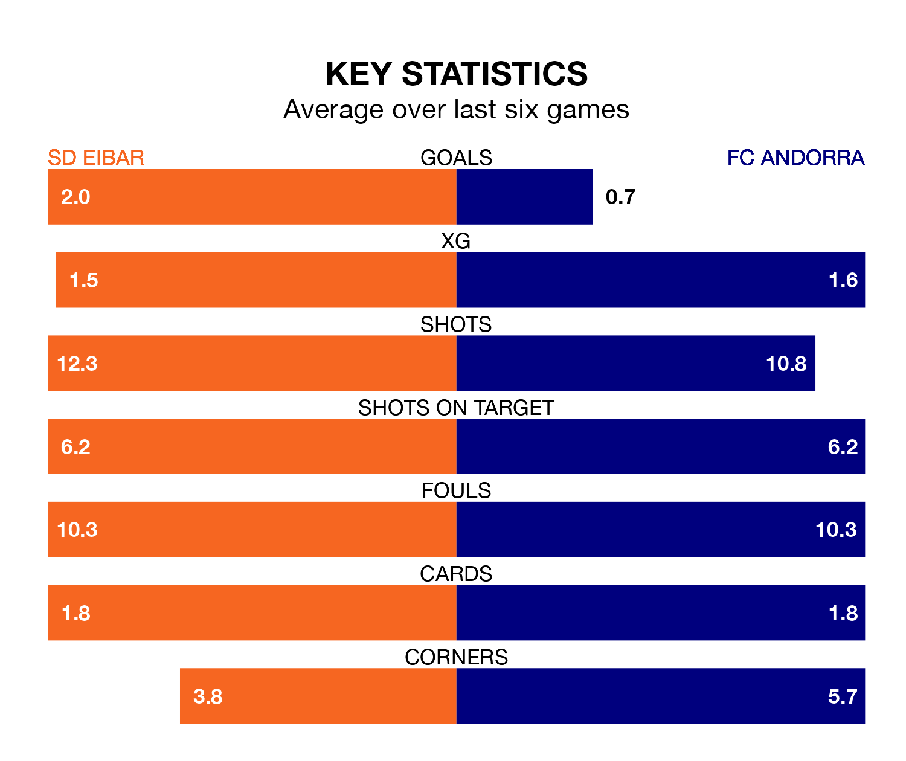

FC Andorra travel to SD Eibar on late Sunday in the Segunda División.
The visitors come into the game on the back of a win in their last match, having beaten SD Huesca 1-0 at home, with a goal from Sergi Samper.
SD Eibar, meanwhile, lost their last match, 1-0 against Villarreal B.
With 31 goals in 18 games so far this season, Eibar are the league's highest scorers with 1.7 goals per game. But they are conceding more than average too, letting in 23 goals at a rate of 1.3 per game.
Andorra, meanwhile, are below average scorers, with 0.9 goals per game, compared to a league average of 1.2. They have conceded 1.2 goals per game.
SD Eibar are sixth in the table after 18 games, of which they have won nine and drawn three, earning 30 points.
FC Andorra are 10 places behind the home side in 16th, with six wins and three draws putting them on 21 points.
With Dani Martín between the sticks, the visitors can rely on one of the league's safest pair of hands. He has kept seven clean sheets in his 12 appearances this season in the Segunda División.
In Eibar's net, Luca Zinedine Zidane has two clean sheets in 18 games. He has conceded a goal every 74 minutes, 60% more often than the 120 minutes between goals for Martín Fernández.
Eibar are in mixed form in the Segunda División, with two wins and two draws from their last six games.
And also with two wins and two draws over that period, Andorra's form is identical – they have both taken eight points from 18.
